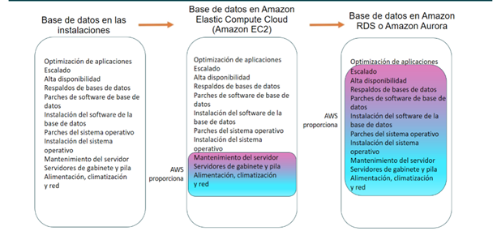
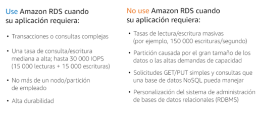

Introducción
La administración de bases de datos en la nube implica la gestión eficiente de sistemas de bases de datos alojados en plataformas de computación en la nube, como AWS, Microsoft Azure y Google Cloud. A diferencia de la administración tradicional de bases de datos, donde los administradores gestionaban tanto el hardware como el software localmente, en la nube muchas de estas responsabilidades son asumidas por los proveedores de servicios, lo que permite a los administradores centrarse en tareas más estratégicas como la optimización del rendimiento, la seguridad y la disponibilidad de los datos.
La administración en la nube incluye la configuración inicial, la gestión de usuarios y permisos, la monitorización continua del rendimiento, la implementación de estrategias de escalabilidad automática y la planificación de la recuperación ante desastres. Los servicios gestionados en la nube simplifican estos procesos, automatizando tareas como la aplicación de parches, copias de seguridad y actualizaciones, lo que permite a las organizaciones aprovechar las capacidades de la nube para aumentar la eficiencia operativa y reducir los costes asociados con la administración de bases de datos.
El despliegue de una base de datos relacional en la nube se refiere al proceso de instalar, configurar y ejecutar una base de datos relacional (RDBMS) en una infraestructura de computación en la nube. En lugar de alojar la base de datos en servidores locales (on-premise), se utiliza una plataforma en la nube, lo que ofrece ventajas en términos de escalabilidad, flexibilidad y costes operativos.
De las bases de datos en las instalaciones a las bases de datos en la nube

Cuando la base de datos está en las instalaciones, el administrador de la base de datos es responsable de todo. Las tareas de administración de la base de datos incluyen la optimización de las aplicaciones y las consultas, la configuración del hardware, la aplicación de parches al hardware, la configuración y alimentación de las redes y la gestión de la calefacción, la ventilación y el aire acondicionado.
Si se cambia a una base de datos que se ejecuta en una instancia de Amazon Elastic Compute Cloud (Amazon EC2), ya no habrá que administrar el hardware subyacente ni encargarse de las operaciones del centro de datos. Sin embargo, habrá que ocuparse de la aplicación de parches al SO y todas las operaciones de software y copia de seguridad.
Al instalar una base de datos en Amazon RDS o Amazon Aurora, se reducen las responsabilidades administrativas. Si se migra a la nube, se puede escalar la base de datos, habilitar la alta disponibilidad, administrar las copias de seguridad y aplicar parches automáticamente. Así, los clientes pueden centrarse en lo que realmente importa: optimizar su aplicación.
Cuándo usar Amazon RDS
RDS es la solución de base de datos relacional convencional, pero a veces no será lo más adecuado según necesidades, y en AWS hay servicios más específicos como DynamoDB (NoSQL) y Redshift (Datawarehouse):
